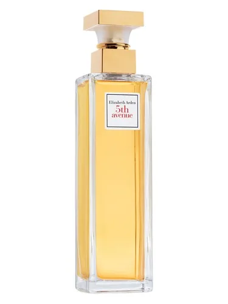

5th Avenue
- Para mujer
- Familia floral
- Lanzado en 1996
$999
Precio de referencia. Te confirmamos el precio final y la presentación por WhatsApp antes de enviar.
Por encargo: lo conseguimos para ti
Cómo huele
Floral
Floral blanco
Floral amarillo
Fresco
Verde
Sus notas
Salida
lima (flor de tilo)lirio de los valleslilamagnoliabergamotanaranja mandarina
Corazón
jazmínnardoylang-ylangmelocotónrosa de Bulgariavioletaclavelnuez moscada
Fondo
almizcleirissándaloámbarvainillaclavos
5th Avenue de Elizabeth Arden es un perfume floral para mujer, lanzado en 1996. Abre con lima (flor de tilo) y lirio de los valles, en el corazón tiene jazmín y nardo y deja un fondo de almizcle y iris. Lo que más se siente: floral, floral blanco y floral amarillo.